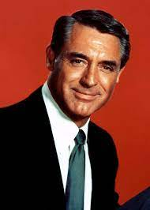

.jpg)
Cary Grant

GETTY IMAGES
¿Por qué? Insuperable, pura elegancia. Inigualable leyendo los diálogos de las mejores screwball comedies y los gestos mudos del mejor cine de Hitchcock.
Películas imprescindibles: Con la muerte en los talones, Arsénico por compasión, Charada, La fiera de mi niña, Encadenados
Alain Fabien Maurice Marcel Delon Arnold
(Sceaux, Altos del Sena, 8 de noviembre de 1935), conocido como Alain Delon, es un actor de cine francés.
Actor entre los más conocidos del cine francés, apareció en películas que atrajeron a un total de 134 millones de espectadores, lo que lo convirtió en un campeón de taquilla como Louis de Funès y Jean-Paul Belmondo al mismo tiempo. Habiendo compartido cartel con grandes actores como Jean Gabin, Simone Signoret, Romy Schneider o Lino Ventura, un gran número de películas en las que interpretó se han convertido en clásicos del cine, entre las que destacan: A pleno sol (dirigida por René Clément, 1959), Rocco y sus hermanos (dirigida por Luchino Visconti en 1960), El eclipse de Antonioni, 1962, El gatopardo (también de Visconti, 1963), El silencio de un hombre (Le samouraï, dirigida por Jean-Pierre Melville, 1967), Nuestra historia (de Bertrand Blier, 1984), etc.